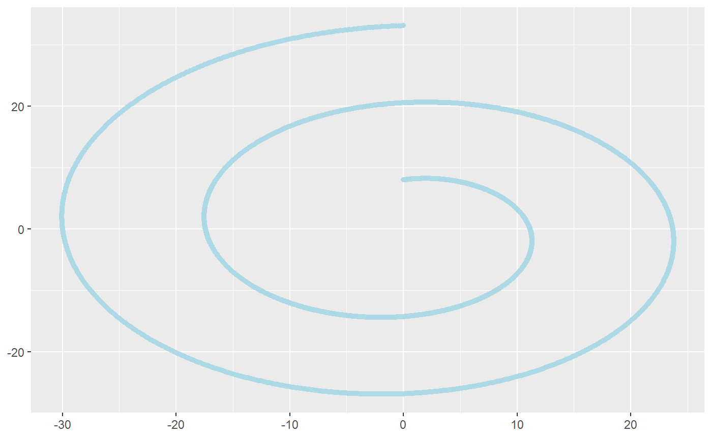
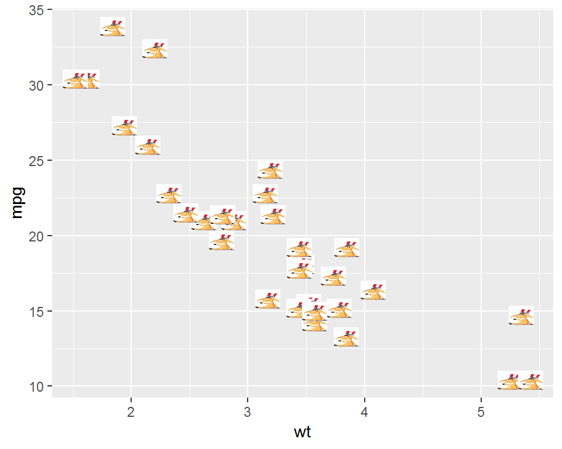
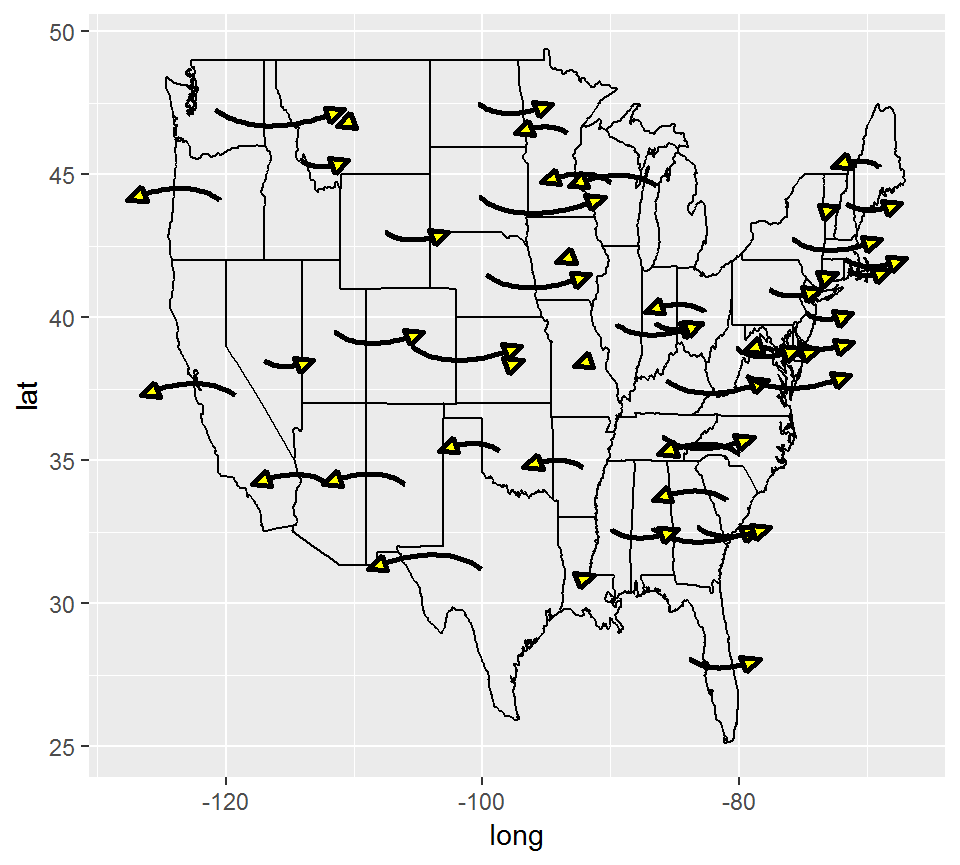

ggfun
Yawei Ge, Zhenzhen Chen, Weiquan Luo
2019-05-09
ggfun-vignette.RmdIntrodction
The package ggfun extends some of the existing ggplot2 functionalities by wrapping up some new layer functions and existing methods. It totally including six packages,stat_star, stat_rl, stat_ars, stat_arrowmap, geom_image, and layer_PersHomo. It covers 3 aspects of the statistics field, statistical method, image visualization, mathematical algorithms. The object-oriented system we used is called ggproto, and the four aspects we extend are stat, geom, theme, and faceting.
stat: drawing the plot through some mathmatic algorithms. In ggfun package, stat_ars, stat_star,stat_arrowmap, are using this function.
geom:showing the geometry objects in the plot. In ggfun package, geom_image is using this function.
faceting:organizing different panels, and designing the layout. In this package, layer_PersHomo is using this function.
Here are links to our github repository and website
Functions
stat_star
This function is a simple application of ggplot2 extension functionlity in stat function. We provided an algorithm here to calculate the “distance” between points and the central point (defined by median) ginven a data set for scatter plot. And draw a line from the central point to the farthest point. It works with usual line geometry objects and applies our algorithm as stat.
Example
The following two examples show the usage in a skewed distribution and a bell-shaped distribution.
madedata1 <- data.frame(x = rnorm(n = 100, mean = 0, sd = 1),
y = rf(n = 100, df1 = 5, df2 = 2))
madedata2 <- data.frame(x = rnorm(n = 100, mean = 0, sd = 1),
y = rnorm(n = 100, mean = 0, sd = 1))
ggplot(madedata1, aes(x = x, y = y)) +
geom_point() +
stat_star()
ggplot(madedata2, aes(x = x, y = y)) +
geom_point() +
stat_star()From the two plots, we can see there are two distributions of the points to show the function in different settings. Our function correctly connected the central point to the farthest point in both cases. It is very straight forward.
stat_rl
This function is a application of ggplot2 used to draw regression linear for each levels of the categorical variables. It does this by providing a new paramter called ‘id’, which can seperate the dataset by the levels of the categorical variable.
The required aesthetics are:
-
x: the numerical explanatory variable in the dataset -
y: the numerical response variable in the dataset -
id: the categroical variable with more than two levels.
Example
‘indexf’ is dataset contain two numerical variable (length(cm) and width(cm)), and one categroical variable (sex (two levels: F, M)).
ggplot(indexf, aes(x = length, y = width, id = sex)) +
geom_point() +
stat_rl(aes(x = length, y = width, id = sex, col = sex))
We used id this parameter to separate the dataset based on the levels of the categorical variable. For the plot, we can clearly to see that there are two regression lines for each level. The basic code and rule, we need for this function just following the ggplot2 package.
stat_ars
This function applied the mathematical algorithm to calculate the Archimedean Spiral. We built this function that can automatically to calculate the Archimedean Spiral and draw the spiral. It used the line geometry objects and applies the algorithm as stat.
The required parameters are:
-
a: rotating the spiral -
b: the distance control between two adjacent curves -
n: the number of turns
Example
ggplot() +
stat_ars(aes(a = 8, b = 2, n = 2), col = "lightblue")
From this plot, we can see that once the users input the three basic parameters for Archimedean Spiral, the function will automatically draw a spiral. We can also be based on adjusting these three parameters to see how each index will affect the spiral. For example, once you increase the b, the spiral will increase the distance between two curves.
geom_image
This function replaces the usual points object in ggplot2 with provied image. This is different from the previous stat related functions, because it create a new geometry object instead of using the existing one. You can treat it like geom_point with the points replaced by your image.
The required parameter besides the usual geom_point ones is:
-
img: the image to show on the plot
Example
path1 <- system.file("extdata", "donkey.jpg", package = "ggfun")
path2 <- system.file("extdata", "elephant.jpg", package = "ggfun")
p1 <- magick::image_read(path1)
p2 <- magick::image_read(path2)
mtcars %>%
ggplot() +
geom_image(aes(x = wt, y = mpg), img = p1)
mtcars %>%
ggplot() +
geom_image(aes(x = qsec, y = mpg), img = p2, size = 0.1)stat_arrowmap
This function follows the same logic from the above function. They both create new algorithms for certain purposes and make use of the existing geometry objects in ggplot2. This function is less general and focuses on a very specific goal that is to create a so called arrow map for the US elections. So it requires the US map information and a data set containing some elements needed to show here.
So usually before you can directly using this function, you need to organize your data into a required form. The required aesthetics are:
-
x: usually longitude -
y: usually latitude -
change: the changes for each state (can be specified by group aesthetics, as one state by default).
Example
Here we use a made up data set to illustrate the main usage of the function.
usmap <- map_data("state")
madedata <- data.frame(region = unique(usmap$region),
change = (runif(49)-0.5)*2,stringsAsFactors = FALSE)
madedata <- madedata %>%
left_join(usmap,by = "region")
madedata %>%
ggplot() +
geom_path(aes(x = long, y = lat, group = group)) +
stat_arrowmap(aes(x = long, y = lat, change = change, group = region))
This is not a good picture, however, notice that we can use the parameters in geom_curve here to modify the arrows to make them better since this function use the curve geometry object.
madedata %>%
ggplot() +
geom_path(aes(x = long, y = lat, group = group)) +
stat_arrowmap(aes(x = long, y = lat, change = change, group = region),
curvature = 0.3, angle = 60,
size = 1, arrow.fill = "yellow",
arrow = arrow(angle = 25,
type = "closed",
length = unit(0.1, "inches")))
You can see there are arrows on the US map for each state with different directions according the sign of the random numbers we generated. The arrow head is closed and filled by yellow color. There are also a lot of other elements about the arrows you can change using the parameters shown in the example.
layer_PersHomo
Given a points set as Geographic locations in a data.frame, extends ggplot2 functionality to draw a line from location to location with defined criterion of distance in km. The concept is inhered from persist homology. The linkage in resulting figures can be used to recognize patterns or cluster of points. Compare to ggplot2 package, plotly package might be better for this functionality because the linkage can be shown on the globe instead of a flat figure. To the purpose of the package, this layer attempt to show the capability of ggplot2 on a small scale data instead of global data.
The required input are:
-
data: a dataframe that each row contain longitude, latitude. -
x: longitude in the input dataframe. -
y: latitude in the input dataframe. -
d: the magnitude of real Geo distance (in km) used as the criterion to link two locations.
Example
The following example show the earthquake data with in Pacific Plate.
library(magrittr)
library(ggplot2)
library(dplyr)
## plot base map
worldmap <- map_data("world2")
p <- ggplot() +
geom_polygon(data=worldmap,
aes(x=long, y=lat, group = group),
fill="white", colour="#7f7f7f", size=0.5) +
theme(axis.line=element_blank(),
axis.text.x=element_blank(),
axis.text.y=element_blank(),
axis.ticks=element_blank(),
axis.title.x=element_blank(),
axis.title.y=element_blank(),
legend.position="none",
panel.background=element_blank(),
panel.border=element_blank(),
panel.grid.major=element_blank(),
panel.grid.minor=element_blank(),
plot.background=element_blank());
data(eqRaw)
eq <- eqRaw %>%
filter(LONGITUDE > 110 | LONGITUDE < -45) %>%
mutate(LONGITUDE = ifelse(LONGITUDE < 0, LONGITUDE + 360, LONGITUDE))
## add layer_PersHomo
fp <- p + layer_PersHomo(data= eq,mapping = aes(x=LONGITUDE, y=LATITUDE),
d=450000, colour = "blue") + geom_point(); fpThe world map shows the so-called Ring of fire for the geographical area, where contains 90 percent of the historical earthquake and 81 percent of the greatest earthquake in the world. The red point is the estimated geographical location of the historical earthquake events. By defining the d parameter in km at the layer_PersHomo layer function, the blue lines are added to the map by connecting any two locations that their distance is less than the defined. All the blue lines as a whole show number of clusters of the points. The clusters are the active earthquake zone as well as the transform faults along the boundaries between the Pacific plate and other plates. Different values in d parameter result different in cluster size because of the merge or splits of the cluster. By changing the d parameter, we can understand the geographic major and minor faults.